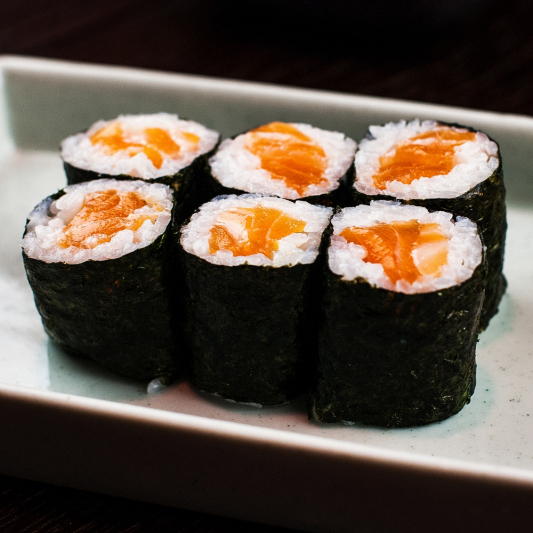

Sushi

This is a recipe for a spicy salmon roll.
Ingredients:
- 1/4 cup mayonanaise
- 2 tablespoons gochujang
- 1 teaspoon fish sauce
- 1 sheet nori
- 1 cup cooked sushi rice
- 2 or 3 thin slices of salmon
- Scallions, julienned
Steps:
- For the spicy mayo: In a small bowl, mix the mayonnaise, gochujang and fish sauce until thoroughly combined.
- For the sushi roll: On a sushi mat lay down the nori. Spread the sushi rice over the nori in an even layer.
Place the salmon horizontally over the bottom third of the sheet, about 1 inch from the edge.
Top with some scallions. Roll up tightly and cut into 4 pieces. Garnish with the spicy mayo.